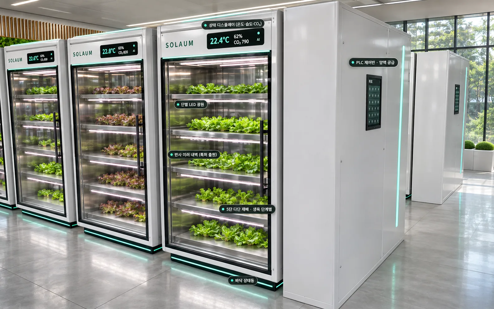
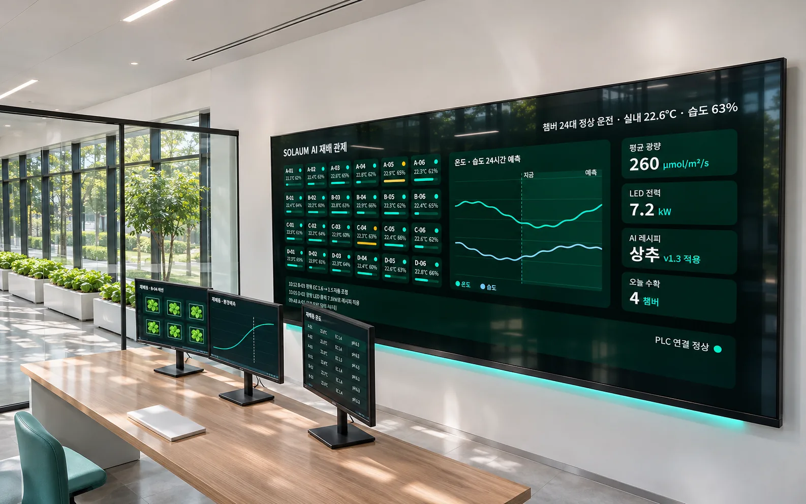
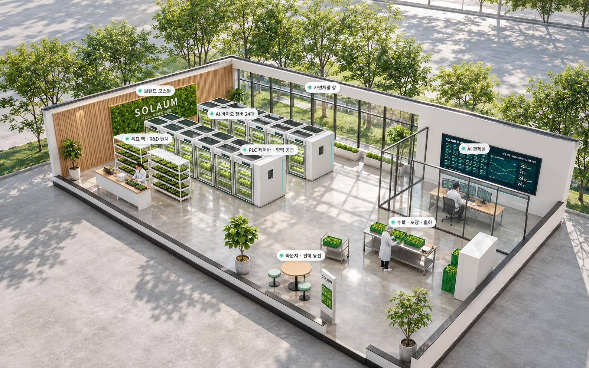
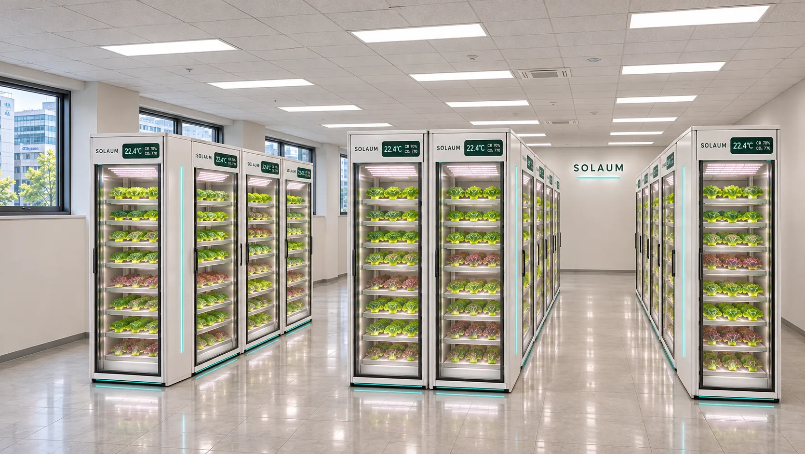
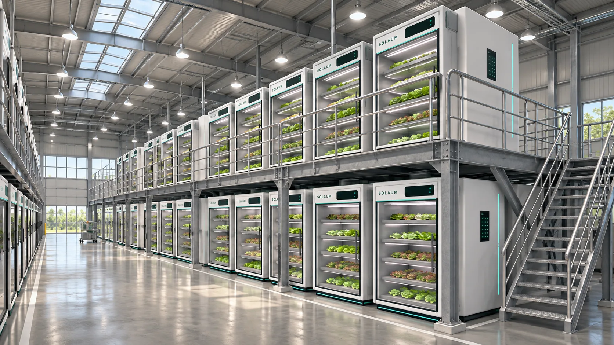

12.4%
한 달 새 오른 채소 값
2026년 8월 채소류 소비자물가가 전월보다 12.4% 올랐습니다. 상추 28.4%, 시금치 68.2%.
농업 인력과 농지는 줄고 폭염은 길어지는데, 소비자가 낸 농산물 값의 절반은 유통비용입니다. 그사이 도시에는 빈 점포가 늘고 있습니다.
2026년 8월 채소류 소비자물가가 전월보다 12.4% 올랐습니다. 상추 28.4%, 시금치 68.2%.
2023년 농산물 평균입니다. 배추·무 같은 엽근채소는 64.3%에 이릅니다.
2026년 3분기 기준입니다. 첫 실증지 대구는 19.6%로 전국보다 4.9%p 높습니다.
2025년 농림어가 인구의 절반 이상이 65세 이상입니다. 노동집약적 채소 생산이 갈수록 어려워집니다.
자료: 2026년 8월 소비자물가동향, 2023년 농산물 유통실태조사, 2026년 3분기 상업용부동산 임대동향, 2025년 농림어업총조사
설치면적 2.4m²의 냉장고형 캐비닛 안에서 빛, 양액, 공기를 PLC와 AI가 함께 관리합니다. 날씨와 상관없이 작물마다 맞는 조건을 만듭니다.

콘셉트 렌더링단마다 작물 바로 위에서 광량과 빛 색을 조절합니다.
벽으로 새는 빛을 작물 쪽으로 되돌립니다. 특허 출원 기술입니다.
생육 단계별로 단을 나눠 좁은 면적을 높이로 씁니다.
손잡이로 넣고 빼는 구조라 수확과 양액 교체가 쉽습니다.
온도, 습도, CO₂를 문 앞 화면과 휴대폰으로 확인합니다.
LED를 위에만 두면 작물이 자랄수록 잎이 빛을 가려 가장자리와 아래 잎이 덜 자랍니다. 솔라움 챔버는 LED 둘레의 거울로 벽에 새던 빛을 작물에 되돌리고, 거울의 경사각과 곡면으로 작물 키에 맞게 반사 범위를 바꿉니다.
조명을 작물 가까이 두고 반사 커튼으로 재배칸을 감싸면 에너지 이용효율이 높아진다는 연구가 있습니다(Frontiers in Plant Science, 2023).
챔버마다 붙는 엣지 AI가 24시간 환경과 수확 무게를 예측해 설정값을 정하고, 실시간 제어와 안전 차단은 PLC가 맡습니다. 통신이 끊기면 PLC가 안전 레시피로 돌아갑니다.

콘셉트 렌더링같은 상추라도 양액과 빛을 바꾸면 성분이 달라집니다. 연구로 근거가 확인된 레시피부터 챔버에서 검증합니다.
| 제품 | 조절 방법 | 근거 | 상태 |
|---|---|---|---|
| 칼륨을 낮춘 상추 | 수확 2주 전 양액의 칼륨 농도를 낮춤 | 잎 칼륨 함량이 대조구보다 유의하게 낮음 (안동대, 2018) | 2027 검증 |
| 안토시아닌을 높인 상추 | 적색·청색 혼합광으로 빛 색 조절 | 적색광 단독 대비 4.1배 (국립원예특작과학원, 2010) | 2027 검증 |
| 비타민C를 높인 상추 | UV-A 보광, 광주기 조절 | 광주기에 따라 아스코르빈산 함량 변화 (전북대, 2016) | 검토 |
일반 식품으로서 질병의 예방이나 치료 효능을 표방하지 않으며, 제품화할 때는 성분 함량 표시 기준을 따릅니다.
2027년 4분기 대구 상가에 여는 1호점 구상입니다. 챔버에서 기른 채소를 그 자리에서 수확·포장해 판매하고, 견학과 실증 데이터 수집도 함께 합니다.

콘셉트 렌더링엽근채소는 소비자가 낸 값의 64.3%가 유통비용입니다(2023). 솔라움은 생산과 판매를 한 매장에 둡니다. 실제 원가와 이익률은 2027년 실증에서 측정해 공개합니다.
챔버는 2.4m² 단위 모듈이라 공간 크기에 맞춰 대수만 늘리면 됩니다. 빈 사무실 한 칸부터 물류창고까지 같은 제어 방식으로 운영합니다.

콘셉트 렌더링공실에 챔버 열을 들여 식당, 카페, 급식처 가까이에서 생산합니다.

콘셉트 렌더링복층 구조물에 챔버를 쌓아 B2B 물량을 생산하고, 같은 AI 관제로 운영합니다.
2.4m² 챔버와 원격 모니터링, 레시피 갱신, 생육 예측을 묶은 AI 운영 서비스를 도입합니다.
빈 상가와 미활용 폐교를 실증 거점으로 함께 검증하고, 현장 재배 데이터를 공유합니다.
특허와 법인, 제어 소프트웨어를 갖췄습니다. 2027년 상추 실증으로 성능을 확인한 뒤 대구에 첫 상가 마이크로팜을 엽니다.
1단계
2026년
2단계
2027년
3단계
2027년
4단계
2027년 4분기
문헌상 수직농장 상추는 kg당 10~18kWh의 전력이 듭니다. 솔라움은 2027년 실증에서 같은 품종·조건의 대조 챔버를 두고 kg당 전력, 상품률, 작업시간을 측정해 공개합니다.
기후와 유통에 흔들리는 신선 채소를, 사람이 사는 도시 안에서 연중 계획 생산합니다. 대구에서 검증한 모델을 전국의 원도심과 폐교로 넓혀 갑니다.
채소 정기 공급, 챔버 도입, 공공 유휴공간 실증과 투자 협력 문의를 받습니다.